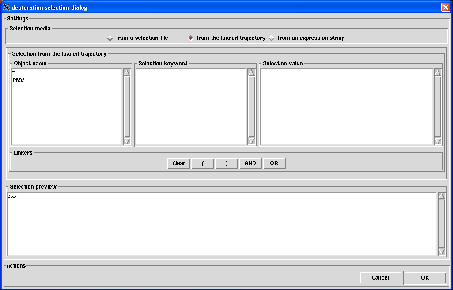

Next: selection from a selection
Up: Atom selection
Previous: selection from an expression
Contents
Deuteration selection
This kind of selection is useful for analysis if you want to change the parameters (e.g. mass, scattering lengths) of some hydrogens
atoms to the ones of deuterium. This allows to simulate the system in a fully or partially deuterated state.
By default, nMOLDYN does not select any hydrogen atom for deuteration for an analysis. The dialog from which a deuteration
selection is performed is displayed in figure 4.24.
Figure 4.24:
The dialog from where a deuteration selection is performed.
|

|
As can be seen from that figure, the deuteration dialog is exactly the same that the subset selection dialog. At the bottom
of the dialog, the Actions frame contains the Cancel button to cancel the selection and
the OK button to validate the selecton.
On the top of the dialog, three radiobuttons allows to select from which media the selection will be performed. This can
be:
- from a selection file: this will perform the selection from a nMOLDYN deuteration selection file,
- from the loaded trajectory: this will perform the selection directly from the contents of the universe contained
in the loaded trajectory,
- from an expression string: this will perform the selection from a valid python expression declaring a list
of atoms to include in the selection.
When clicking on one of these radiobutton, a media-specific dialog will be displayed in the underneath frame.
Subsections
Next: selection from a selection
Up: Atom selection
Previous: selection from an expression
Contents
pellegrini eric
2009-10-06